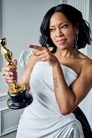

Они изменят кино в 2021 году
Вот уже много лет подряд редакторы, критики и журналисты Variety объединяются, чтобы выбрать десятку самых, по их мнению, перспективных режиссеров, на которых киноманам стоит обратить внимание в следующем году. Ранее в этот почетный список попадали Грета Гервиг, Хлоя Чжао, Дэвид Ф. Сандберг, Оливия Уайлд и даже Дени Вильнев, так что замечать таланты команда издания умеет.
В 2020-м из-за пандемии количество фестивалей, где начинающие или малоизвестные фильммейкеры могли бы себя показать широкой публике, существенно сократилось, так что подобный список актуален как никогда.
В него вошли
- Прано Бэйли-Бонд («Цензор»),
- Лайл Митчелл Корбин мл. («Дикий индеец»),
- Ниа ДаКоста («Кэндимен»),
- Сиан Хедер («Кода»),
- Реджина Кинг («Одна ночь в Майами»),
- Роузэнн Лианг («Тень в облаках»),
Источник:
Variety